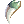
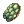

Abyss Dungeon 4
Abyss Dungeon F4 is the fourth floor of the well-known Abyss Lake.
It's considered an end game dungeon, requiring anyone that wishes to enter to be at least level 190. Being in a party and having appropriate equipment is also recommended.
Besides being a good leveling place, it's possible to obtain new cards and the new Obtainable Equipment.
Access
After obtaining at least level 190, to access the dungeon:
- Via the earlier floor, Abyss Lake F3, as shown on the minimap on the right.
Monsters
This map has monsters that have drops with increased rates:
- Monsters will show them when you use @mi .
- Not all drops of a monster are affected by it, you've to check them one by one.
- Any type of Bubble gum will not affect the drop rate of these items and you see a (No Gum) on @mi.
- Example: Banana Bread 2.00% (No Gum)
- In this map the items affected are
 Dragon Treasure, Large Dragon Bone,
Dragon Treasure, Large Dragon Bone,  Red Dragon Orb, Green Dragon Orb,
Red Dragon Orb, Green Dragon Orb,  Gold Dragon Orb, Purple Dragon Orb, Blue Dragon Orb, and Silver Dragon Orb
Gold Dragon Orb, Purple Dragon Orb, Blue Dragon Orb, and Silver Dragon Orb
| Image | Name | Level | HP | Size / Race / Element |
|---|---|---|---|---|
| Purple Ferus | 202 | 3,404,262 | Large / Dragon / Poison 4 | |
| Treasure Mimic | 204 | 3,436,608 | Large / Formless / Neutral 4 | |
| Black Acidus | 207 | 3,455,504 | Large / Dragon / Dark 4 | |
| Silver Acidus | 207 | 3,455,504 | Large / Dragon / Ghost 4 | |
| Bone Ferus | 206 | 3,474,420 | Large / Undead / Undead 4 | |

|
Bone Acidus | 207 | 3,491,700 | Large / Undead / Undead 4 |
Bone Detardeurus
|
209 | 90,000,000 | Large / Undead / Undead 4 |
Obtainable Equipment
Armors
The arrival of the dungeon introduces new craftable armors with drops obtainable from the dungeon.
They can be crafted by Redhead inside Hugel Weapon Dealer.
| Image | Name | Description | Crafting |
|---|---|---|---|
| Red Dragon Plate [1] |
|
50 Red Dragon Orb
75  Dragon Canine 100 50 100  Dragon Skin 35 35 35 35 | |
| Green Dragon Plate [1] |
|
50 Green Dragon Orb
100 50 100 Dragon Skin 35 35 35 35 | |
| Gold Dragon Plate [1] |
|
50 Gold Dragon Orb
100 50 100 Dragon Skin 35 35 35 35 | |
| Purple Dragon Plate [1] |
|
50 Purple Dragon Orb
100 50 100 Dragon Skin 35 35 35 35 | |
| Blue Dragon Plate [1] |
|
50 Blue Dragon Orb
100 50 100 Dragon Skin 35 35 35 35 | |
| Silver Dragon Plate [1] |
|
50 Silver Dragon Orb
100 50 100 Dragon Skin 35 35 35 35 | |
| Dragon Scale Hood [1] |
|
75 15 75 Dragon Skin 25 25 25 25 | |

|
Dragon Scale Boots [1] |
|
60 40 60 Dragon Skin 25 25 25 25 |


Enchantments
All equipments obtained from this danger can be enchanted with Dragon's Power. There are 4 different kind of Dragon's Powers:
- Burning Dragon's Power (for Dragon Scale Hood)
 Hot Dragon's Power (for Dragon Scale Boots)
Hot Dragon's Power (for Dragon Scale Boots) Turbulence Dragon's Power (for
Turbulence Dragon's Power (for  Dragon Plates)
Dragon Plates)- Stable Dragon's Power (for Dragon Plates)
They can be obtained either by opening Dragon Treasures which are dropped from monsters in the dungeon, or can be crafted by Bluehead ((hu_in01 93/322)).
Stable Dragon's Power can only be obtained as an MVP drop or by trading 5 Turbulence Dragon's Power with Bluehead.
You can freely re-enchant the equipments again if the enchants are not to your liking.
| Image | Name | Option 1 | Option 2 |
|---|---|---|---|
| Burning Dragon's Power | 1 Large Dragon Bone | 8 Red Dragon Orb
| |
| Hot Dragon's Power
|
1 Large Dragon Bone | 7 Red Dragon Orb
| |
| Turbulence Dragon's Power
|
1 Large Dragon Bone | 12 Red Dragon Orb
| |
| Stable Dragon's Power | 5 Turbulence Dragon's Power
|
Cards
| Card | Type | Description |
|---|---|---|
 Purple Ferus Card Purple Ferus Card
|
Headgear Card |
|
 Treasure Mimic Card Treasure Mimic Card
|
Garment Card |
|
 Black Acidus Card Black Acidus Card
|
Weapon Card |
|
 Silver Acidus Card Silver Acidus Card
|
Weapon Card |
|
 Bone Ferus Card Bone Ferus Card
|
Accessory (Left) |
|
 Bone Acidus Card Bone Acidus Card
|
Accessory (Right) |
|
 Bone Detardeurus Card Bone Detardeurus Card
|
Armor Card |
|